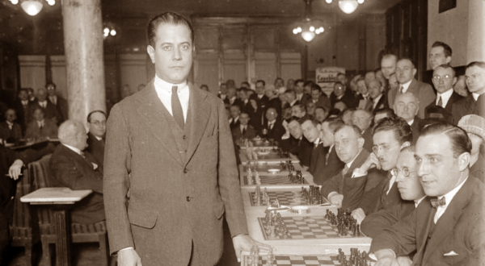
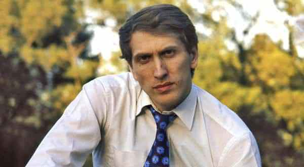
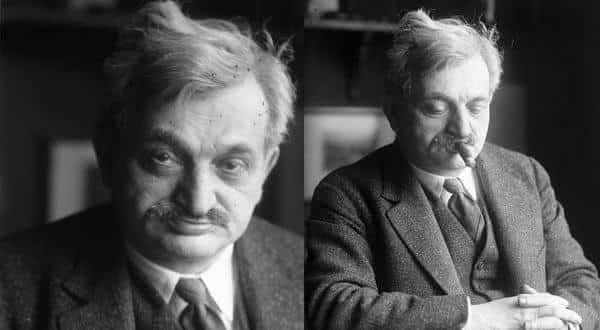
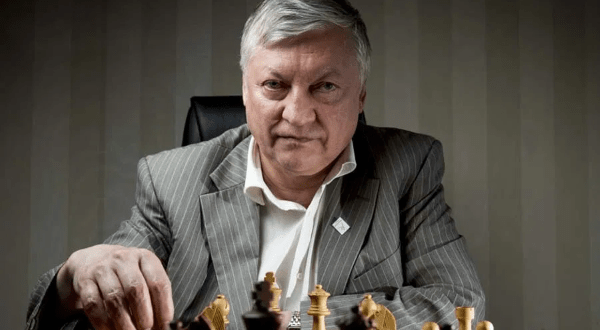
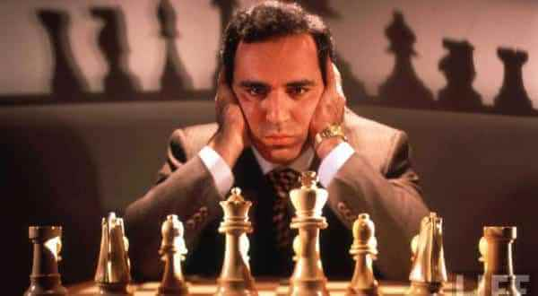

Melhores Jogadores de Todos os Tempos
A história do xadrez é permeada com grandes lendas. Jogadores excepcionais e que nos presentearam com exibições icônicas.
Eles se sobressaíram aos demais, deixando um marco na história do jogo.
Os Cinco Maiores Jogadores da História
Fonte: Rankings
5°- JOSÉ RAÚL CAPABLANCA – CUBA, 1888-1942
José Raul Capablanca. Fonte: Rankings
José Raúl Capablanca foi um jogador de xadrez cubano que foi campeão mundial de xadrez de 1921 a 1927. Um dos maiores jogadores de todos os tempos, ele foi famoso por sua excepcional habilidade de fim de jogo e velocidade para jogar.
Pelas suas realizações no mundo de xadrez, maestria sobre o tabuleiro e seu estilo de jogar relativamente simples, ele foi apelidado de Máquina de Xadrez Humana.
4°- BOBBY FISCHER – ESTADOS UNIDOS, 1943-2008
Bobbby Fischer. Fonte: Rankings
Bobby foi um jogador americano e décimo primeiro Campeão Mundial. É amplamente considerado como um dos melhores jogadores de xadrez de todos os tempos. Fischer foi também o autor do Xadrez best-selling.
Considerado uma lenda do xadrez, aos 13 anos, Fischer se tornou famoso por seu jogo, “O Jogo do Século”, contra Donald Byrne em Nova York. Aos 15 anos de idade se tornou o mais novo GM e candidato para Campeonato Mundial.
3°- EMANUEL LASKER – ALEMANHA, 1868-1941
Emanuel Lasker. Fonte: Rankings
Emanuel foi um jogador alemão, matemático e filósofo que foi campeão mundial de xadrez por 27 anos. Em seu primeiro, Lasker foi um dos campeões mais dominantes, e ainda é considerado um dos jogadores mais fortes na história.
Seus contemporâneos afirmaram que Lasker usava jogo mental, e até se movia deliberadamente errado para confundir os adversários. Uma recente análise, no entanto, indica que ele foi à frente do seu tempo e usava uma abordagem mais flexível que seus contemporâneos. Ele publicou 5 livros e revistas de xadrez.
2°- ANATOLY KARPOV – RÚSSIA, 1951-
Anatoly Karpov. Fonte: Rankings
É um grande mestre de xadrez soviético/russo e ex-Campeão Mundial. Ele foi o oficial campeão mundial de 1975 a 1985 quando foi derrotado por Garry Kasparov.
1°- GARRY KASPAROV – RÚSSIA, 1963-
Garry Kasparov. Fonte: Rankings
Nascido em Baku, Azerbaijão em 1963, Kasparov é um grande mestre de xadrez que se tornou o campeão mundial em 1985 por derrotar Anatoli Karpov. Nenhum outro jogador dominou o xadrez por tanto tempo como ele.
E é considerado por muitos como o melhor jogador na história do xadrez. Garry também aparece em nossa lista das pessoas vivas mais inteligentes do mundo com um QI de 192 pontos.